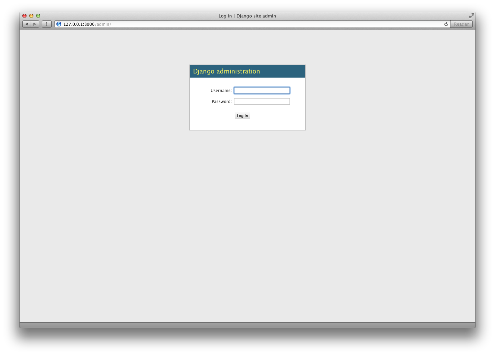
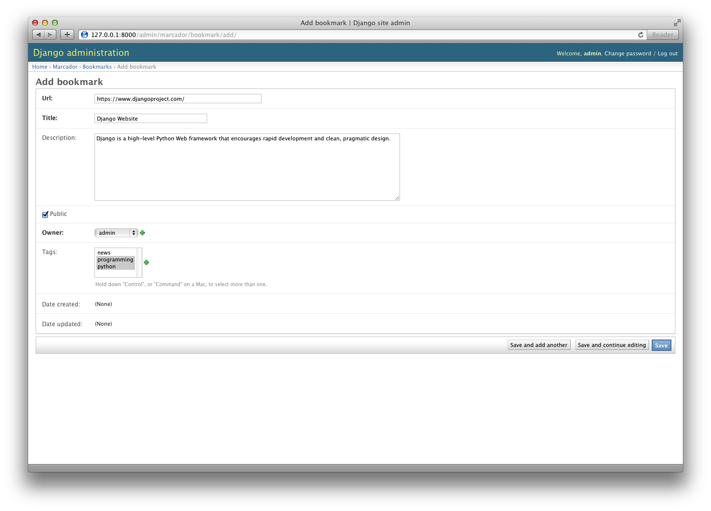
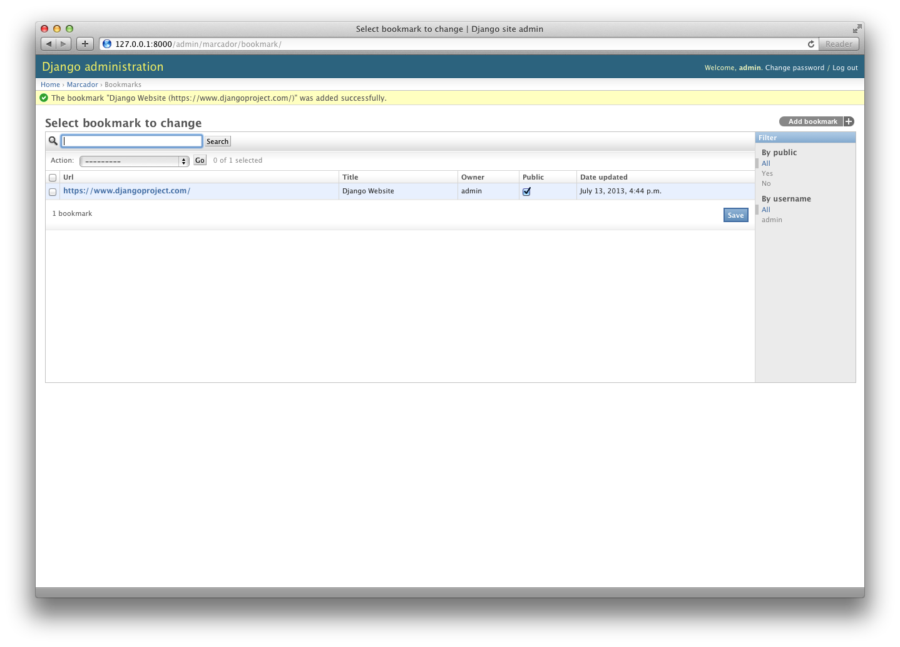

Overview
Introduction
Markus Zapke-Gründemann
Software Developer since 2001
Software development with Python, Django and Mercurial
Independent since 2008
Owner of transcode
What is Django?
Django Reinhardt
* 23.1.1910✝ 16.5.1953
General
- Web Application Framework
- Written using the Python programming language
- Open Source Software (BSD Licence)
- Django Software Foundation (DSF)
- Extensive Documentation
- Huge, friendly Community
Philosophy
- Rapid Development
- Loosely Coupled
- Reusable Applications
- Don't Repeat Yourself (DRY)
Every piece of knowledge must have a single, unambiguous, authoritative representation within a system.
Architecture
MTV
Architecture
- Model
- Data (Object Relational Mapper)
- Template
- Presentation (HTML)
- View
- Business Logic (Response)
Architecture
Components
Components
- Sessions
- Authentication & Authorisation
- Forms
- Validation
- Serialization (JSON, XML, YAML)
- Syndication (RSS, Atom)
Components
- Testing
- Caching
- Internationalisation & Localisation
- Security
- File Storage
- GeoDjango (GIS)
- Interactive Shell (REPL)
Admin
Admin
Admin
Built-in Development Server
$ python manage.py runserver
Validating models...
0 errors found
March 02, 2013 - 15:58:34
Django version 1.5, using settings 'mysite.settings'
Development server is running at http://127.0.0.1:8000/
Quit the server with CONTROL-C.
[02/Mar/2013 15:58:45] "GET /admin/ HTTP/1.1" 200 7256
[02/Mar/2013 15:58:47] "GET /admin/sites/site/ HTTP/1.1" 200 4874
[02/Mar/2013 15:58:47] "GET /admin/jsi18n/ HTTP/1.1" 200 5467
[02/Mar/2013 15:58:49] "GET /admin/ HTTP/1.1" 200 7256
[02/Mar/2013 15:58:51] "GET /admin/auth/user/ HTTP/1.1" 200 6162
[02/Mar/2013 15:58:51] "GET /admin/jsi18n/ HTTP/1.1" 200 5467
Development process
Django Releases
- Minor release every 9 months
- API remains stable and backwards compatible
- Clear and documented depreciation timeline
- Python 3 support since Django 1.5
Django by numbers
- 6.000.000 website visitors per month
- 21.700 subscribers on the django-users mailing-list
- over 2.000 packages on the Python Packaging Index (that's more than 10%)
- 33 core developers
- translated into over 65 languages
Since the middle of 2012
Source:
Measuring the Django Community: The Django community in 2012
Django in the wild
Django Software Foundation
- Founded in 2008
- Support development of Django by sponsoring sprints, meetups, gatherings and community events
- Promote the use of Django
- Protect the intellectual property and the framework's long-term viability
- Advance the state of the art in Web development
- Corporate membership possible
- www.djangoproject.com/foundation/
Related links
- www.djangoproject.com
Django Website - docs.djangoproject.com
Django Documentation - www.revsys.com/django/cheatsheet
Django Cheat Sheet from Revolution Systems - ccbv.co.uk
Guide to Django Class-Based Views - www.djangopackages.com
Django Packages - djangosnippets.org
Django snippets
Useful Django Applications
pip install <app-name>Acknowledgements
Ross Crawford-d'Heureuse
(English translation)
Frank Becker
Image sources
- Django and the Django Logo are registered trademarks of Django Software Foundation
- Django Reinhardt Portrait: Wikimedia Commons/William P. Gottlieb (public domain)
.jpg){kind=link}
Licence
This work is copyright under
Creative Commons
Attribution - Share Alike 3.0 Unported License